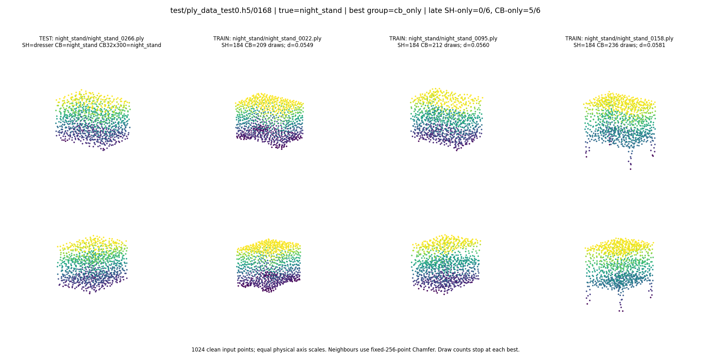
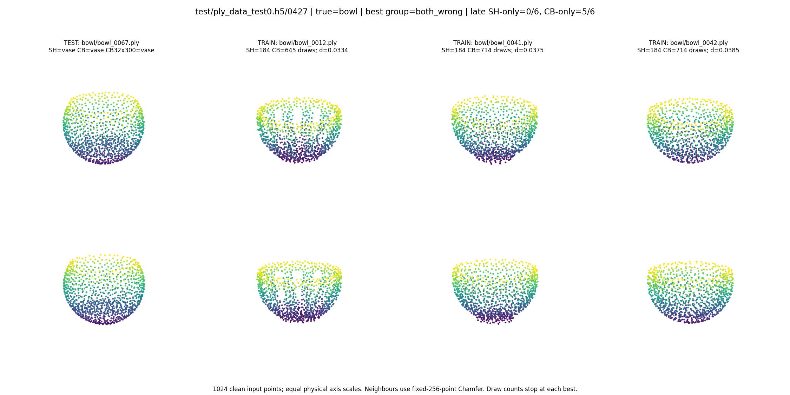
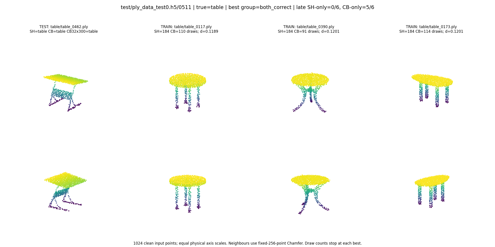
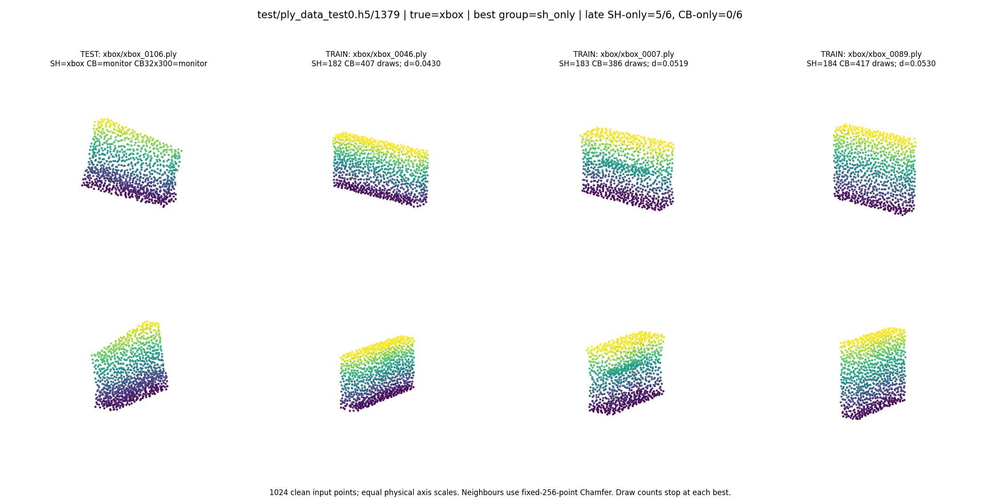
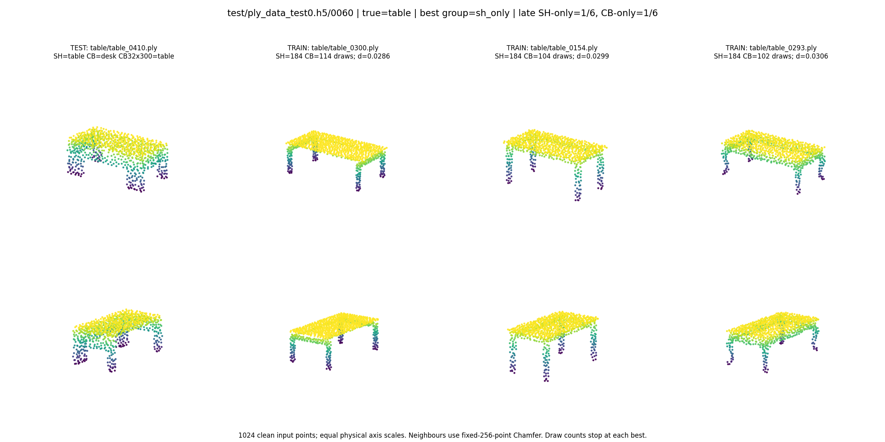
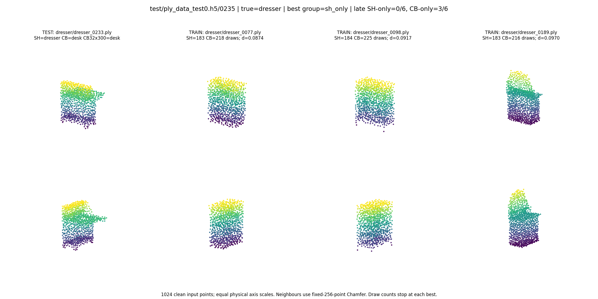
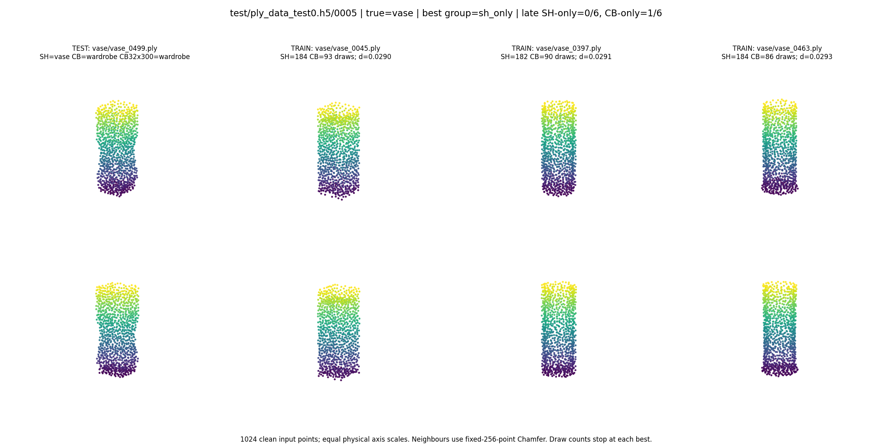
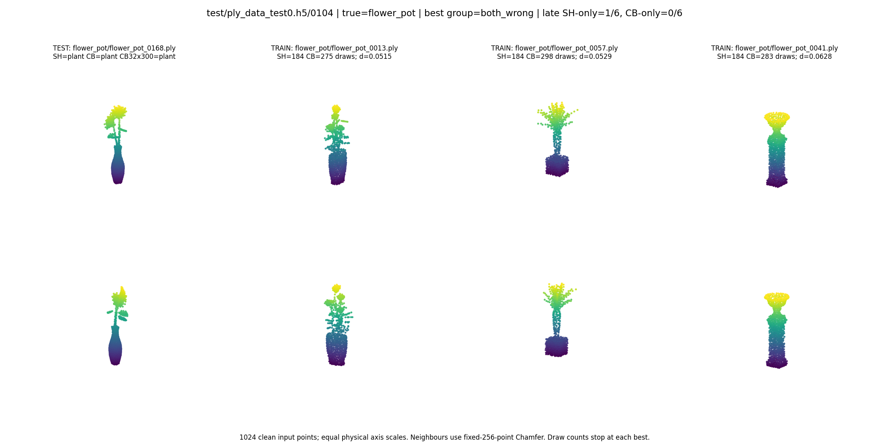
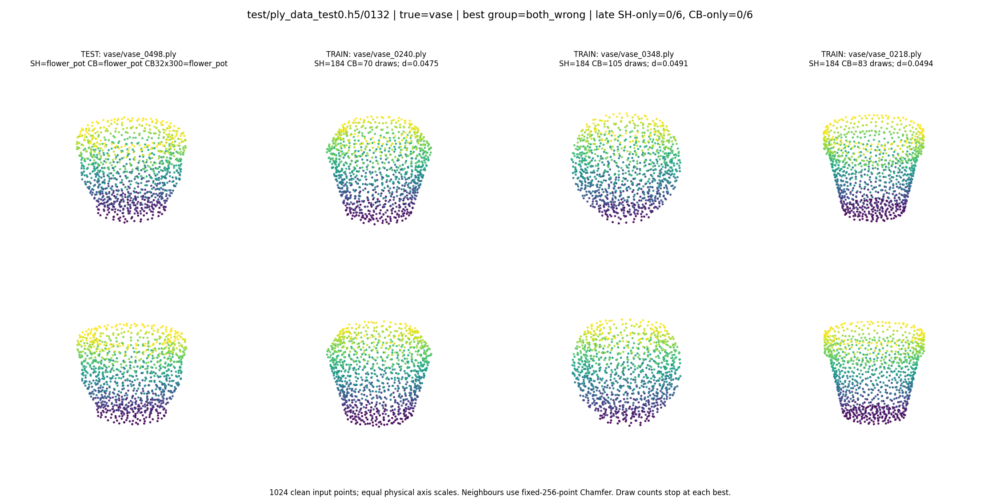
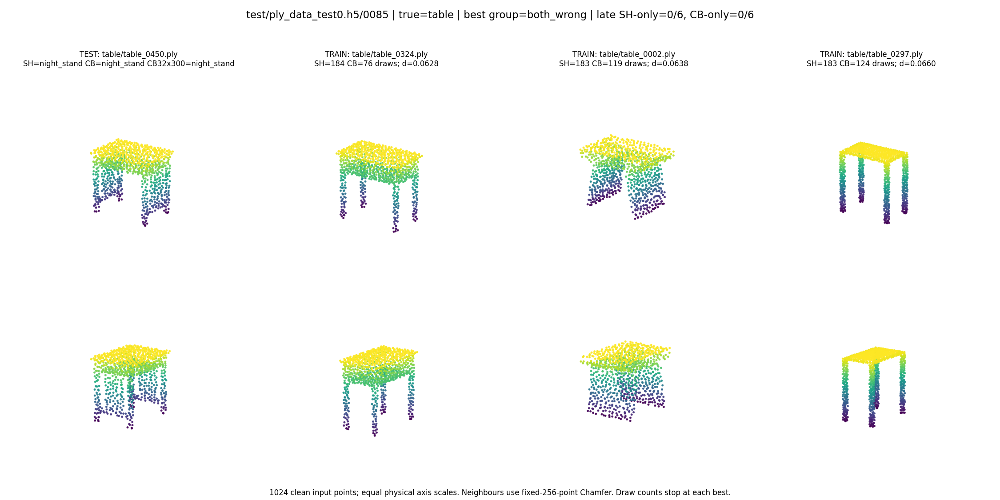

TS06 SH32 / TS30 CB32 object audit
All four persistent candidates, representatives of top three net-loss classes, and top three all-H0-error classes. Fixed data-based selection; 1024-point plots with equal physical axis scales. Counts at best checkpoints.
night_stand/night_stand_0266.ply | cb_only

bowl/bowl_0067.ply | both_wrong

table/table_0462.ply | both_correct

xbox/xbox_0106.ply | sh_only

table/table_0410.ply | sh_only

dresser/dresser_0233.ply | sh_only

vase/vase_0499.ply | sh_only

flower_pot/flower_pot_0168.ply | both_wrong

vase/vase_0498.ply | both_wrong

table/table_0450.ply | both_wrong
